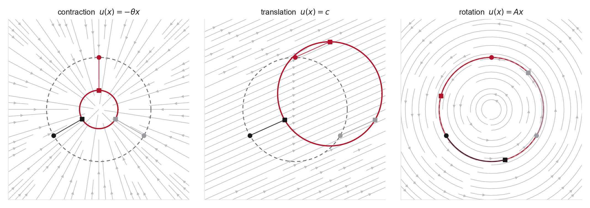

Concepts you need
- Solving linear ODEs, plus matrix exponentials for part 3
- Jacobians and determinants of maps on \(\mathbb R^d\)
- Divergence of a vector field
- Integration by parts against a test function (for the weak form in part 4)
If you get stuck
- MIT notes, Section 2.1 for flow maps and the continuity equation, whose integration-by-parts derivation matches the weak form here
- Matrix exponential for solving \(u(x)=Ax\), where computing \(e^{tA}\) by hand gives sine and cosine for the rotation field
- Problem 1, part 3 for pushforward notation if the density bookkeeping feels unclear
Source note. Adapted from MIT notes Section 2.1 on flow models and the continuity-equation perspective used later for flow matching.
Let \(X_t\in\mathbb R^d\) evolve by the ODE
\[
\frac{d}{dt}X_t = u_t(X_t), \qquad X_s=x_s.
\]
The associated flow map \(\psi_{s,t}\) sends the state at time \(s\) to the state at time \(t\). In physical terms, \(p_t\) is a compressible fluid density, \(u_t\) is the velocity field, and probability mass is conserved.

- For \(u(x)=-\theta x\), solve the ODE exactly. Compute \(\psi_{0,t}\), \(\psi_{0,t}^{-1}\), \(\det \nabla \psi_{0,t}\), and \(\nabla\cdot u\).
- For \(u(x)=c\), where \(c\in\mathbb R^d\) is constant, solve the ODE and explain why the flow is volume-preserving.
- For \(d=2\) and \(u(x)=Ax\), with \[ A=\begin{pmatrix}0 & -\omega \\ \omega & 0\end{pmatrix}, \] solve the ODE and show that the flow is volume-preserving.
- Using a smooth compactly supported test function \(\varphi\), derive the weak form of the continuity equation and then the PDE \[ \partial_t p_t(x)+\nabla\cdot(p_t(x)u_t(x))=0. \]
- Verify the continuity equation for the contraction field using the density obtained from the change of variables formula.
- Show that the flow maps satisfy the semigroup property \[ \psi_{s,r}=\psi_{t,r}\circ\psi_{s,t}, \qquad s\leq t\leq r. \] Explain why this identity becomes important later when we learn finite-time flow maps directly.
- Time reversal. Suppose \(u_t\) transports \(p_0\) to \(p_1\) over \(t\in[0,1]\). Show that \(\tilde u_t(x) = -u_{1-t}(x)\) transports \(p_1\) back to \(p_0\). For the contraction field, describe what the reversed flow does to a tight Gaussian. In Week 2 you will see that reversing a stochastic process is not this easy, since the correction term is exactly the smoothed score you derived in Problem 1.
Why this matters. This is the central mathematical picture behind the first half of the course. Flow matching, stochastic interpolants, probability-flow ODEs, and flow-map models are all refinements of this same transport view.